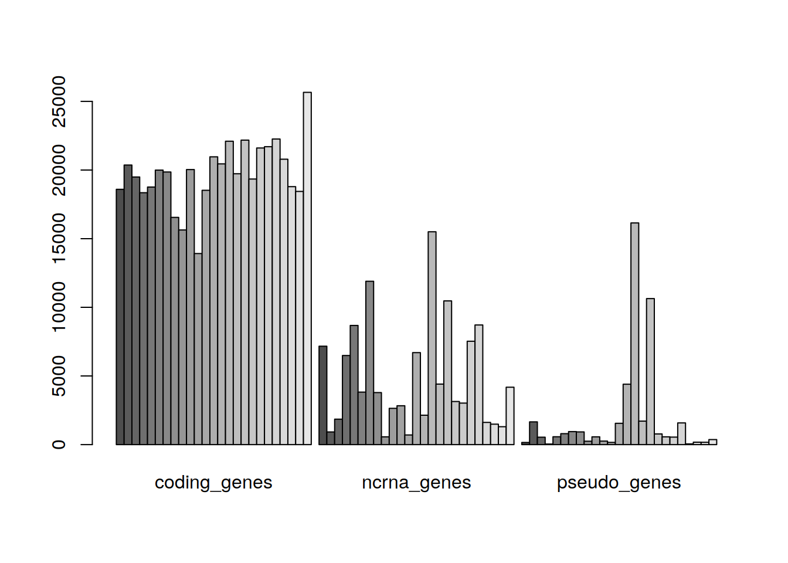
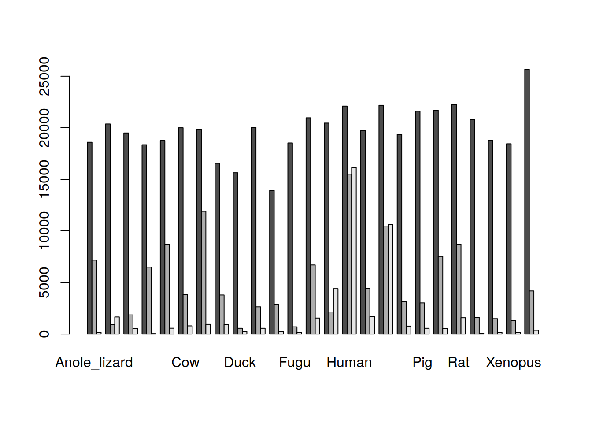
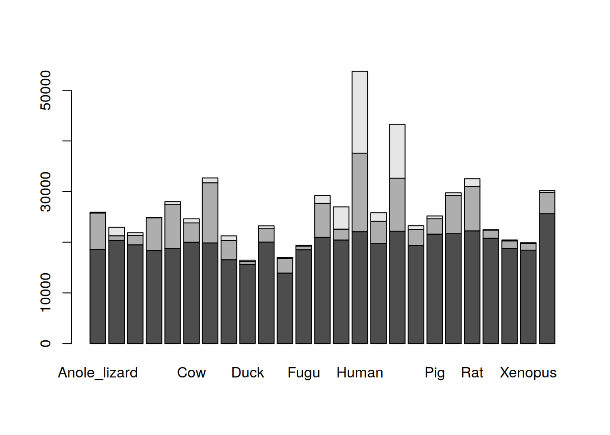
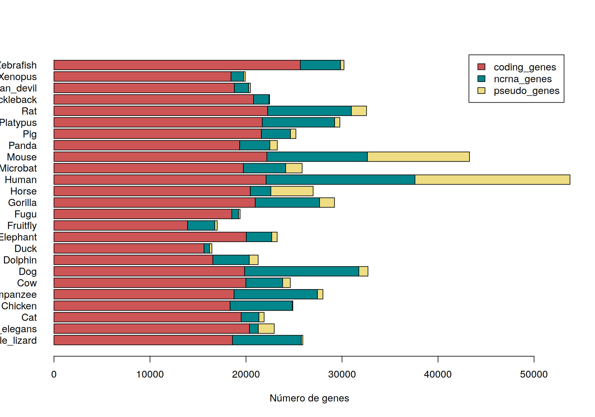

Al igual que los vectores, las matrices son una estructura de datos del mismo tipo, con la diferencia de que en las matrices los datos están estructurados en dos dimensión. Es posible crear matrices usando el comando matrix().
## [,1] [,2] [,3] [,4] [,5]
## [1,] 1 2 3 4 5
## [2,] 6 7 8 9 10
## [3,] 11 12 13 14 15También es posible tener estructuras de datos de más de dos dimensiones, para ello usamos el comando array(). En este tutorial veremos poco sobre matrices, pero es importante que algunos de los comandos que veremos para los DataFrames son también aplicables para las matrices. Puedes consultar más al respecto en los siguientes vinculos: 1, 2.
list().## [[1]]
## [1] "Arc"
##
## [[2]]
## [1] 1000
##
## [[3]]
## [1] TRUE
##
## [[4]]
## [1] "AGTTTG"Los elementos de las listas pueden ser nombrados:
## $gen
## [1] "Arc"
##
## $num_bases
## [1] 1000
##
## $expresado
## [1] TRUE
##
## $sec_inicial
## [1] "AGTTTG"Los elementos dentro de una lista se obtienen usando dos corchetes cuadrados anidados: [[ i ]], donde \(i\) es el número de elemento deseado.
Ejercicio:
class() para veriguarlo.Si se han asignado nombres a la lista, es posible usarlos para extraer los datos:
## [1] "gen" "num_bases" "expresado" "sec_inicial"Por ejemplo, nos interesa extraer de la lista los datos correspondientes a la variable gen:
## [1] "Arc"## [1] "Arc"## [1] "Arc"Las tres formas anteriores son válidas y permiten obtener el mismo resultado.
DataFrames son uno de los objetos más usados en R.Dataframe como una tabla de datos de un determinado número de filas y columnas. Sin embargo, a diferencia de las matrices, los DataFrames pueden tener datos heterogéneos.Comencémos creando un DataFrame usando el comando data.frame():
my_df = data.frame( "Num_de_gen" = c(1:3),
"Nombre_gen" = c("Arc", "cdk2", "miR-1–1"),
"Expresado" = c(TRUE, FALSE, FALSE),
"Num_pbases" = c(100, 200, 60)
)
my_df## Num_de_gen Nombre_gen Expresado Num_pbases
## 1 1 Arc TRUE 100
## 2 2 cdk2 FALSE 200
## 3 3 miR-1–1 FALSE 60| Num_de_gen | Nombre_gen | Expresado | Num_pbases |
|---|---|---|---|
| 1 | Arc | TRUE | 100 |
| 2 | cdk2 | FALSE | 200 |
| 3 | miR-1–1 | FALSE | 60 |
Ya has creado tu primer DataFrame, sin embargo, vamos ahora un conjunto de datos proveniente de un archivo.
Vamos a utilizar los datos proporcionados por el Dr. Cei Abreu en la página Prácticas de Bioinformática: R. En particular, vamos a utilizar el archivo ensembl_info.tab.
La información en la tabla que acaban de descargar fue obtenida de la página de Ensembl, que reune una gran cantidad de información sobre genomas completamente secuenciados de vertebrados y algunos organismos modelo.
Citado la página http://datos.langebio.cinvestav.mx/~cei/cursos/BP_2018/
Una vez descargado el archivo, guárdalo en tu directorio de trabajo (puedes usar el comando getwd() (getWorkDirectory) para guardar ahí el archivo).
Vamos a abrir el archivo utilizando el comando read.table().
Nota: ¿Qué indican los parámetros header= y row.names=?
Una vez cargado, podemos comprobar que el objeto es un DataFrame:
## [1] "data.frame"Además, podemos usar los comandos head() y tail() para ver las primeras y las últimas filas de la tabla, respectivamente. Tú puedes imprimir toda la tabla en consola, si así lo deseas.
## coding_genes ncrna_genes pseudo_genes coding_gene_avg_length
## Anole_lizard 18595 7168 157 35332.78
## C_elegans 20362 922 1658 3088.45
## Cat 19493 1855 542 36566.75
## ncrna_gene_avg_length pseudo_gene_avg_length
## Anole_lizard 10318.72 878.24
## C_elegans 334.04 1389.75
## Cat 103.16 792.30
## coding_trans_avg_length ncrna_trans_avg_length
## Anole_lizard 2572.26 548.16
## C_elegans 1399.78 255.94
## Cat 2169.50 103.16
## pseudo_trans_avg_length genome_length
## Anole_lizard 868.57 1799143587
## C_elegans 855.84 100286401
## Cat 743.36 2455541136## coding_genes ncrna_genes pseudo_genes
## Tasmanian_devil 18788 1490 178
## Xenopus 18442 1306 173
## Zebrafish 25658 4182 368
## coding_gene_avg_length ncrna_gene_avg_length
## Tasmanian_devil 36980.19 119.02
## Xenopus 22927.14 125.49
## Zebrafish 31539.44 3518.02
## pseudo_gene_avg_length coding_trans_avg_length
## Tasmanian_devil 73189.70 2062.99
## Xenopus 936.50 1957.54
## Zebrafish 5966.81 2551.89
## ncrna_trans_avg_length pseudo_trans_avg_length
## Tasmanian_devil 119.02 2223.13
## Xenopus 125.49 923.82
## Zebrafish 316.81 1285.90
## genome_length
## Tasmanian_devil 3174709637
## Xenopus 1511735326
## Zebrafish 1371719383 En Environment puedes comprobar que el objeto ensTab ha sido creado, puedes abrirlo desde RStudio para examinarlo. También puedes usar el comando View(nombre_del_dataFrame ).
Ejercicio: Usando los comandos indicados, averigua lo siguiente de la tabla ensTab:
dim()str()?nrow()ncols()colnames()Ahora vamos a inspeccionar más a fondo los datos de la tabla. Si queremos obtener un dato particular de la tabla, por ejemplo cuántos genes codificantes tiene el Humano, podemos usar lo siguiente:
# Fíjate en la sintáxis:
# Primero ponemos el nombre de la fila, y luego el de la columna.
ensTab["Human", "coding_genes"]## [1] 22097¿Cuál es la longitud del genoma del Tasmanian_devil?
ensTab["Tasmanian_devil", "genome_length"] # Este funcionará
ensTab["genome_length", "Tasmanian_devil"] # Este NO funcionará Primero nombra o indica la fila, y luego la columna, separados por una coma ,.
Ahora queremos saber los datos de las primeras dos columnas (variables coding_genes y ncrna_genes) de las primeras tres especies:
¿Qué pasa si queremos ver la longitud de los genomas de todas las especies?
## [1] 1799143587 100286401 2455541136 1230258557 3309577922 2670422299
## [7] 2410976875 2521923936 1105035747 3196760833 143725995 393312790
## [13] 3040677044 2474929062 3096649726 2034575300 2730871774 2299509015
## [19] 2808525991 2073148626 2870184193 461533448 3174709637 1511735326
## [25] 1371719383Analiza lo siguiente:
¿Qué especie tiene la mayor longitud de genoma? Para ello podemos averiguar qué hace la función which.max().
Tómate un tiempo para analizar los siguientes comandos.
longitudes_genoma = ensTab$genome_length
# ¿Es esto similar a la opción de arriba? -> ensTab[ , "genome_length" ]
# ¿Recuerdas que también era posible hacer esto con las listas?
# ¿Qué crees que indique la función which.max()?
maximo_pos = which.max( longitudes_genoma )
rownames(ensTab[ maximo_pos , ])¿Qué ocurrió?
ensTab$genome_length es similar a ejecutar ensTab[ , "genome_length" ] (recuerda que las columnas se nonbran después de las filas y de la coma ,), con lo cual obtenemos un vector de valores correspondentes a la longitud del genoma de cada especie.which.max identifica al valor máximo y nos devuelve su posición en el vector. En cambio, si recuerdas, el comando max() nos devolvía el valor máximo (pero no su posición en el vector).maximo_pos se le asignó el valor de la posición del valor máximo del vector.ensTab[ maximo_pos , ] es equivalente a ensTab[ 5 , ], y en la tabla, el Chimpance está en la fila número 5.rownames() nos simplifica la visualización mostrándonos únicamente el nombre de esa fila.Ahora podemos ver el resultado de la ejecución:
## [1] "Chimpanzee"Nota: Aunque parezca más “profesional” ejecutar todo en una sola línea, como en el ejemplo de arriba, lo más recoemendable es que escribas tu código de tal manera que facilite a otras personas, incluyendo al futuro tú, su lectura e interpretación.
Tómate unos minutos para análizar lo que hacen cada uno de los siguientes comandos:
# 1) ¿Qué especies tienen más de 22,000 genes codificantes?
rownames( ensTab )[ensTab$coding_genes > 22e3]
# 2) ¿Cuál es el promedio, en Megabases, de todas las especies?
longs_Mb = ensTab$genome_length / 1e6
mean( longs_Mb )
# 3) ¿Qué porcentaje del genoma de cada especie es codificante?
# Calculamos el número de pb codificantes
avg_coding_base_pairs = ensTab$coding_genes * ensTab$coding_gene_avg_length
# Obtenemos el porcentaje
percentage = avg_coding_base_pairs / ensTab$genome_length * 100
# Lo agregamos a la tabla
# (OJO: La columna "coding_genes_percentage" la estamos creando nosotros)
ensTab$coding_genes_percentage = percentagePodemos usar el comando barplot() para visualizar nuestros datos en un gráfico de barras. Supon que queremos visualizar únicamente los datos de genes codificantes, ncRAN y pseudo genes. Para ello creamos un nuevo DataFrame con sólo estos datos:
Si ahora intentamos usar barplot() tendremos lo siguiente:
## Error in barplot.default(genesTab, beside = TRUE): 'height' must be a vector or a matrixComo indica el error, debemos convertir el DataFrame genesTab a una matriz, para ello usamos el comando as.matriz().
Y generamos la gráfica:

Besides nos grafica los datos de cada columna por separado. Podemos cambiar esto girando o transponiendo la matriz con el comando t(), esto hará que ahora las columnas sean las filas, es decir, que las especies sean ahora las columnas (prueba en la consola t(m.ensTab).

¡Casi! Pero aún es difícil comparar por especie, de hecho, los datos están tan apilados que R no ha podido “dibujar” los nombres de todas las especies.
Segundo intento, removamos besides().

¿Mejor?. Ahora tenemos una gráfica de barras apiladas. Con una barra por especie. Pero seguimos sin visualizar los nombres de las especies. Lo mejor será graficar horizontalmente:
barplot( t(m.ensTab), horiz = TRUE, las = 1,
# Y agregamos algo de decoración
col = c("indianred3", "turquoise4", "lightgoldenrod"),
xlab = "Pares de bases",
legend.text = (colnames(genesTab))) 
¡Listo!
Puedes continuar hacia la siguiente sección.